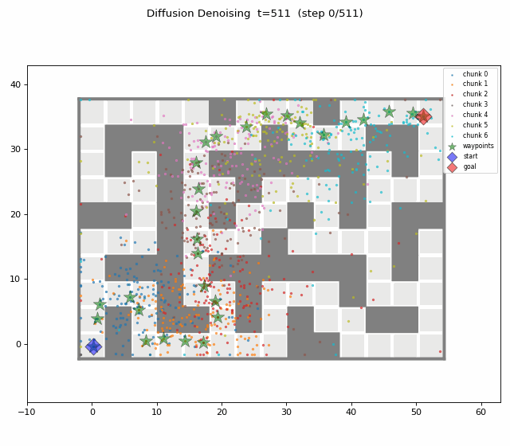
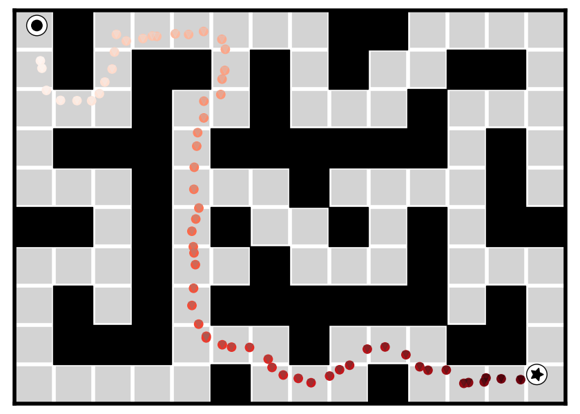
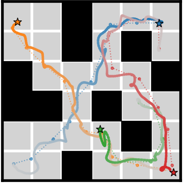
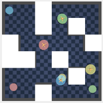

Compositional diffusion models offer a promising route to long-horizon planning by denoising multiple overlapping sub-trajectories while ensuring that together they constitute a global solution. However, enforcing local behavior over long chains is often insufficient for a coherent global structure to emerge. Recent works tackle this limitation through intrinsic search, which explores multiple paths during the denoising process. While intrinsic search improves global coherence, it comes at the cost of repeated evaluations of an already compute-heavy model.
In this work, we argue that extrinsic search, performed outside the denoising process, offers a more effective mode of exploration for long-horizon planning while naturally enabling the use of classical algorithms to solve unseen combinatorial tasks at test time. Our eXtrinsic search-guided Diffuser (XDiffuser) first computes a plan over a state-space graph—serving as a lightweight local connectivity oracle for the diffusion model. The plan is then used to guide denoising for a single trajectory, effectively offloading the burden of exploration. XDiffuser outperforms diffusion-based baselines on long-horizon tasks, with particularly large gains in the low-quality data regime and on unseen tasks beyond goal-reaching, including multi-agent coordination and TSP-style reasoning.
XDiffuser shows significant performance gains even when trained on suboptimal or low-quality datasets, where standard diffusion planners often fail.
By offloading exploration to classical algorithms, XDiffuser naturally generalizes to unseen tasks at test time, such as TSP-style reasoning and multi-agent coordination.
Traditional diffusion planners use intrinsic search, which is computationally expensive. XDiffuser proposes extrinsic search:

XDiffuser outperforms diffusion-based baselines on long-horizon tasks, including multi-agent coordination.


@article{hassidof2024plan,
title={Plan First, Diffuse Later: Extrinsic Graph Guidance for Long-Horizon Diffusion Planning},
author={Hassidof, Yaniv and Morgan, Adir and Du, Yilun and Solovey, Kiril},
journal={arXiv preprint arXiv:2410.14660},
year={2026}
}